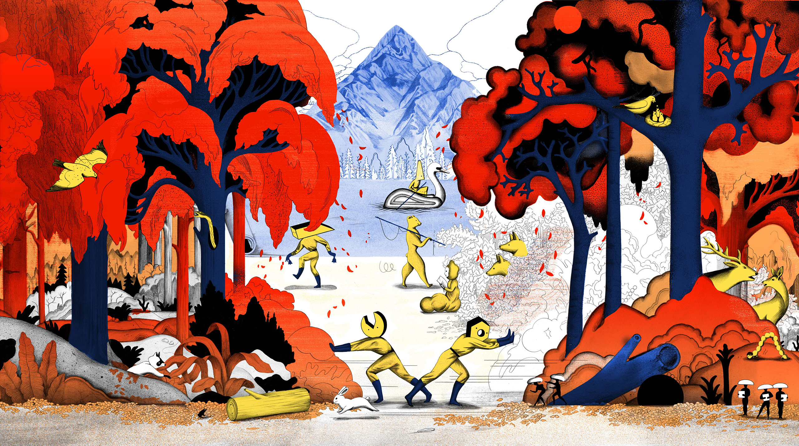
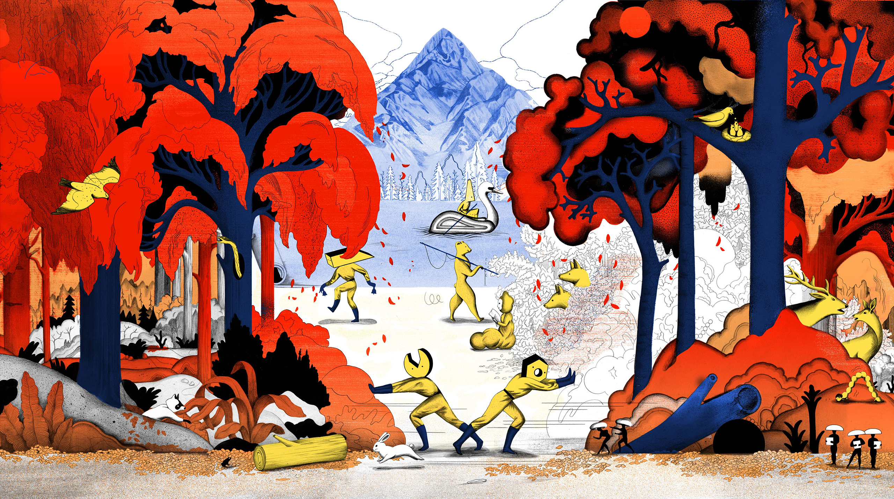

Mostra
La mostra "Visioni Illustrate: Viaggio nell'Illustrazione Contemporanea" inaugurerà il primo maggio alle 18:00, segnando l'inizio di un'esclusiva esposizione dedicata all'illustrazione contemporanea che promette di essere un punto di riferimento culturale per il mese a venire.

.jpg)

Questo evento speciale offrirà agli appassionati d'arte, agli illustratori, ai designer e al pubblico generale l'opportunità di immergersi in un mondo dove la creatività non conosce confini. L'inaugurazione sarà non solo un'anteprima delle opere esposte, ma anche un'occasione per incontrare alcuni degli artisti partecipanti, condividere pensieri e discutere le diverse interpretazioni e ispirazioni dietro ogni pezzo.
.jpg) 


Laboratorio Bambini
Il laboratorio creativo per bambini è un'avventura artistica pensata per stimolare l'immaginazione e la creatività dei più piccoli. Attraverso attività manuali, disegno e pittura, i bambini avranno l'opportunità di esplorare diverse tecniche artistiche in un ambiente divertente e accogliente. Guidati da istruttori esperti, impareranno a esprimere le proprie idee e emozioni creando opere d'arte uniche. Questo workshop è progettato non solo per sviluppare le abilità artistiche, ma anche per incoraggiare il lavoro di squadra, la fiducia in sé e l'apprezzamento per l'arte. Un'esperienza educativa e coinvolgente, perfetta per liberare la fantasia e il talento di ogni bambino.